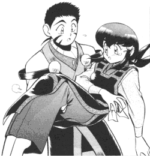

A Tenchi Fan Fic Challenge |
Here is the text of a old challenge I made to a few mailing lists. A few writers have risen to the challenge and their works are now in the archive. There is no rush to answer this challenge.. .For I rather have a fic done well, than several rushed. |
Hello,
This is a restatement of a message to that I had sent to the RFFC (Ryoko Forever Fan Club) Mailing List and other mailing lists winter 1998. Perhaps you will partake in this challenge also...
Aeka happens to be my favorite Tenchi character... I do also have a rather high regard towards Ryoko, (She is my second favorite Tenchi character) Aeka is numero uno, but barely. Several internet friends have suggested that I start a AFFC (Aeka Forever Fan Club) being that there isn't any organization that praises Aeka. Fortunately / unfortunately (Whatever you think), I do not have the time to start up such a club. I am studying to be a civil engineer and I archive / read Tenchi Fan Fics (That doesn't give me much time for anything else). Afterwards the AFC (Aeka Fan Club) came into existence a short time after this letter, which I am one of the club's inital members.
Now you may wonder why Aeka is my favorite character... Well several months ago I was rather undecided on who was my favorite Tenchi character, Aeka or Ryoko. They both had their strong points and their weak points. (I could go on and on about this topic but I won't) So I was as indecisive as Tenchi was... But, I changed my mind thanks to one type of Tenchi material-- Fan Fics...
Yep... That is right. FanFics have persuaded me into placing Aeka on a high pedestal. I have read a lot of Tenchi fan fiction (I kind of have to since I archive nearly every Tenchi Fic in existence... ok not everyone... but a majority of them). And I have noticed a TON of Ryoko gets Tenchi Fics. A few examples are "Ryoko's Love", "The Darkness", "No need for Sasami", "Ryoko's Gems", "The Ball", "Ryouko's Loss", "It's the Small Things that Matter", "Memories to the Present", "To B or Not to B", and "Aikan Muyo" to a certain extent. But some of those stories warp Aeka's character badly and unfairly boosts Ryoko's character. Thus Tenchi, has no other choose but to choose Tenchi. Although I do love the stories that are in character, it is rather sad to note Aeka gets the short end of the stick. Although there are a few fics where Aeka does get Tenchi. They are mainly joint fics that has Tenchi marring both Aeka and another Tenchi character, be it Sasami, Washu, Ryoko, etc.
I have yet to read any fic that would truly allow Aeka to win Tenchi's heart all by herself. It made me feel sympathy towards Aeka. Everyone keeps bashing her. Censoring her name, calling her names, making fun of eery weak point she has. etc. That also may have been a contributing factor in my decision.
Not that many people care for Aeka once Ryoko gets Tenchi. Especially some people that may read this, but you are free to your opinion. "Wasuremono", by Ed Sharpe, was a somewhat believable tale on how Aeka would react if she didn't get Tenchi. Also some writers have Aeka falling for another man. Perhaps so that Ryoko can have Tenchi all to her self or that They wanted Aeka to have some one else after Tenchi chooses Ryoko.
Just to see what would happen I decided to try a little experiment... A few days ago, I participated in a RPG on the dal.net. Ryoko had won Tenchi's heart once again... They asked me to play Aeka, so I decided to play the part. Aeka took the news rather well and ran off crying... Many of the participants didn't really care what happened to Aeka. Ryoko finally was suspicious and was looking around for the missing princess. She found Sasami crying in the kitchen. Ryoko then learned from the grief stricken princess that Aeka had taken her life. Obviously, everyone stated to care again for Aeka. They tried their best to revive/heal her, but an omnipotent power stopped them... Perhaps I was in a morbid mood at the time, but several people Just want to see Tenchi with Ryoko. They don't care or ignore the consequences of said act. So I showed then the error of their ways.
And finally my challenge... Since this tread is mainly titled "If Aeka got Tenchi", then I challenge anyone to write a fan fic where Aeka gets Tenchi. It must be believable and not be part of a paring or group wedding. I have yet seen ANY fic where Aeka alone marries Tenchi. (That is saying a lot, since I have read hundreds of Tenchi Fics.) It would be a nice change of pace. Although it would be hard to write, you could explain and extrapolate on how Ryoko handles loss. What would happen if Aeka did win? What wound happen to Ryoko? What would happen to the others? One can explain their theory though the ever so useful media of FanFics.
Thank you for your time and attention.
Sincerely,Aldrich "GenSao" Bautista
Maintainer of the Tenchi Muyo Fan Fiction Archive